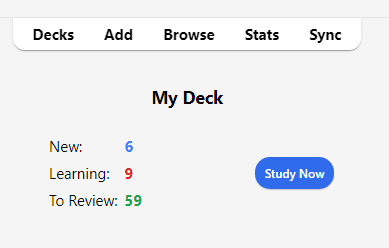
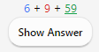

Studying
- Decks
- Study Overview
- Questions
- Learning/Relearning Cards
- Review Cards
- Due Counts
- Fuzz Factor
- Editing and More
- Display Order
- Siblings and Burying
- Keyboard Shortcuts
- Falling Behind
When you have found a deck you like or entered some notes in, it’s time to start studying.
Decks
Study in Anki is limited to the currently selected deck as well as any subdecks it contains.
On the decks screen, your decks and subdecks will be displayed in a list. New, Learn and Due (To Review) cards for that day will be also displayed here.

When you click on a deck, it will become the 'current deck', and Anki will change to the study screen. You can return to the deck list to change the currently selected deck at any time by clicking on “Decks” at the top of the main window. (You can also use the Study Deck action in the menu to select a new deck from the keyboard, or you can press the s key to study the currently selected deck.)
You can click the gears button to the right of a deck to rename or delete a deck, change its options, or export it.
Study Overview
After clicking on a deck to study, you’ll see a screen that shows you how many cards are due today. This is called the 'deck overview' screen:

The cards are split into three types: New, Learning, and To Review. If you have Bury siblings activated in your deck options, you may see how many cards will be buried in grey:

To start a study session, click the Study Now button. Anki will proceed to show you cards until the cards to be shown for the day have run out.
While studying, you can return to the overview by pressing the s key on your keyboard.
Questions
When a card is shown, only the question is shown at first. After thinking about the answer, either click the Show Answer button, or press the spacebar. The answer will then be shown. It’s okay if it takes you a little while to recall the answer, but as a general rule if you can’t answer within about 10 seconds, it’s probably better to give up and show the answer than keep struggling to remember.
When the answer is shown, you should compare the answer you thought of with the answer which is shown and tell Anki how well you remembered. If you don’t trust yourself to compare your answer accurately, you can ask Anki to prompt you to type in the answer rather than just showing it to you.
Learning/Relearning Cards
When learning new cards, or when relearning cards that you have forgotten, Anki will show you the cards one or more times to help you memorize them. Each time is called a 'learning step'. By default there are two steps: 1 minute and 10 minutes. You can change the number of steps and the delays between them in the deck options.
There are four rating buttons when learning:
-
Again moves the card back to the first step.
-
Hard repeats the current step.
- If the card is on the first (and the only) step, the delay is 50% larger than the step. But, this delay is at most one day larger than the step.
- If the card is on the first step and the you have configured more than one step, the delay will be the average of Again and Good, i.e., the average of the first two steps.
- If the card is on any subsequent step, Hard repeats the previous delay.
-
Good moves the card to the next step. If the card was on the final step, the card is converted into a review card (it 'graduates'). By default, once the card has reached the end of the learning steps, the card will be shown again the next day, then at increasingly long delays (see the next section).
-
Easy immediately converts the card into a review card, even if there were steps remaining. By default, the card will be shown again 4 days later, and then at increasingly long delays. In the v1 scheduler, the "Easy" button will not be shown if you are in relearning mode as it would give the same interval as “Good.” With the v2 scheduler+, when cards are in relearning, the "Easy" button boosts the interval by 1 day.
When cards are seen for the first time, they start at step one. This means answering Good on a card for the first time will show it one more time in 10 minutes, and the initial 1 minute step will be skipped. If you push Again, though, the card will come back in 1 minute.
You can use the 1, 2, 3 and 4 keys on your keyboard to select a particular button, where 1 is Again. Pressing Space or Enter will select Good.
If there are no other cards to show you, Anki will show learning cards again even if their delay has not elapsed completely. If you’d prefer to wait the full learning delay, you can change this behaviour in Preferences>Scheduling>Learn Ahead Limit.
Review Cards
When a card has been previously learnt and is ready to be reviewed again, there are four buttons to rate your answer:
-
Again marks your answer as incorrect and asks Anki to show the card more frequently in the future. The card is said to have 'lapsed'. Please see the lapses section for more information about how lapsed reviews are handled.
-
Hard by default, shows the card at a slightly longer delay than last time, and tells Anki to show the card more frequently in the future.
-
Good tells Anki that the last delay was about right, and the card easiness doesn’t need to be adjusted down or up. At the default starting easiness, the card will be shown again approximately 2 1/2 times longer than the previous time, so if you had waited 10 days to see the card previously, the next delay would be about 25 days.
-
Easy tells Anki you found the delay too short. The card will be scheduled further into the future than 'Good', and Anki will schedule the card less frequently in the future. Because 'Easy' rapidly increases the delay, it’s best used for only the easiest of cards. Usually you should find yourself answering 'Good' instead.
As with learning cards, you can use 1, 2, 3 and 4 on the keyboard to select an answer. Pressing the spacebar or Enter will select Good.
See Deck Options and the FAQ to learn more about how the algorithm works.
Due Counts
When only the question is shown, Anki shows three numbers like 6 + 9 + 59 at the bottom of the screen. These represent the new cards (blue), cards in learning (orange), and cards to review (green). If you’d prefer not to see the numbers, you can turn them off in Anki’s preferences.

In the v1 scheduler, the numbers count reviews needed to finish all the cards in that queue, not the number of cards. If you have multiple steps configured for lapsed cards, the number will increase by more than one when you fail a card, since that card needs to be shown several times.
From the v2 scheduler, the numbers count cards, so the number will always increase by one regardless of the steps remaining.
When the answer is shown, Anki shows an estimate of the next time a card will be shown above each button. If you’d prefer not to see the estimates, you can disable them in Anki’s preferences.
Fuzz Factor
When you select an ease button on a review card, Anki also applies a small amount of random “fuzz” to prevent cards that were introduced at the same time and given the same ratings from sticking together and always coming up for review on the same day. This fuzz will appear on the answer buttons when the v3 scheduler is enabled, so if you are using a previous version and you’re noticing a slight discrepancy between what you select and the intervals your cards actually get, this is probably the cause.
Learning cards are also given up to 5 minutes of extra delay so that they don’t always appear in the same order, but answer buttons won't reflect that. It is not possible to turn this feature off.
Editing and More
You can click the Edit button in the bottom left to edit the current note. When you finish editing, you’ll be returned to study. The editing screen works very similarly to the add notes screen.
At the bottom right of the review screen is a button labeled More. This button provides some other operations you can do on the current card or note:
-
Flag Card: Adds a colored marker to the card, or toggles it off. Flags will appear during study, and you can search for flagged cards in the Browse screen. This is useful when you want to take some action on the card at a later date, such as looking up a word when you get home. If you're using Anki 2.1.45+, you can also rename flags from the browser.
-
Bury Card / Note: Hides a card or all of the note’s cards from review until the next day. (If you want to unbury cards before then, you can click the “unbury” button on the deck overview screen.) This is useful if you cannot answer the card at the moment or you want to come back to it another time. Burying can also happen automatically for cards of the same note.
With the old scheduler, if cards were in learning when they were buried, they were moved back to the new card queue or review queue prior to being buried.
With the 2.1 scheduler, however, burying cards does not reset a card's learning steps.
-
Forget card: Move current card to the end of the new queue.
From Anki 2.1.50+, Anki will remember the original order of a new card when it is first studied with the v3 scheduler. The "Restore original position" option allows you to reset the card back to its original position when you forget it.
The "Reset repetition and lapse count" option, if enabled, will set the review and failure counters for the card back to zero. It does not remove the review history that is shown at the bottom of the card info screen.
-
Set Due Date: Put cards in the review queue, and make them due on a certain date.
-
Suspend Card / Note: Hides a card or all of the note’s cards from review until they are manually unsuspended (by clicking the suspend button in the browser). This is useful if you want to avoid reviewing the note for some time, but don’t want to delete it. With the old scheduler, if cards were in learning when they are suspended, they are moved back to the new card queue or review queue prior to being suspended.
With the 2.1 scheduler, however, suspending cards does not reset a card's learning steps.
-
Options: Edit the options for the current deck.
-
Card Info: Displays statistical information about the card.
-
Previous Card Info: Displays statistical information about the previous card.
-
Mark Note: Adds a “marked” tag to the current note, so it can be easily found in the browser. This is similar to flagging individual cards, but works with a tag instead, so if the note has multiple cards, all cards will appear in a search for the marked tag. Most users will want to use flags instead.
-
Create Copy: Opens a duplicate of the current note in the editor, which can be slightly modified to easily obtain variations of your cards. By default, the duplicate card will be created in the same deck as the original.
-
Delete Note: Deletes the note and all of its cards.
-
Replay Audio: If the card has audio on the front or back, play it again.
-
Pause Audio: Pauses the audio if it is playing.
-
Audio -5s / +5s: Jump backwards / forward 5 seconds in the currently playing audio.
-
Record Own Voice: Record from your microphone for the purposes of checking your pronunciation. This recording is temporary and will go away when you move to the next card. If you want to add audio to a card permanently, you can do that in the edit window.
-
Replay Own Voice: Replay the previous recording of your voice (presumably after showing the answer).
Display Order
Studying will show cards from the selected deck and any decks it contains. Thus, if you select your “French” deck, the subdecks “French::Vocab” and “French::My Textbook::Lesson 1” will be shown as well.
The way Anki fetches cards from the decks depends on the algorithm used:
-
With the v1 scheduler, when a deck has subdecks, the cards will appear from each deck in turn.
-
With the v2 scheduler, when a deck has subdecks, reviews are taken from all children decks at once. The review limit of the child decks is ignored - only the limit of the deck you clicked on applies.
-
With the v3 scheduler each child deck's limit is also enforced, and you do not need to see the cards in deck order either. See the deck options section of the manual for more information.
By default, for new cards, Anki fetches cards from the decks in alphabetical order. So in the above example, you would get cards first from “French”, then “My Textbook”, and finally “Vocab”. You can use this to control the order cards appear in, placing high priority cards in decks that appear higher in the list. When computers sort text alphabetically, the “-” character comes before alphabetical characters, and “~” comes after them. So you could call the deck “-Vocab” to make them appear first, and you could call the other deck “~My Textbook” to force it to appear after everything else.
New cards and reviews are fetched separately, and Anki won’t wait until both queues are empty before moving on to the next deck, so it’s possible you’ll be exposed to new cards from one deck while seeing reviews from another deck, or vice versa. If you don’t want this, click directly on the deck you want to study instead of one of the parent decks.
Since cards in learning are somewhat time-critical, they are fetched from all decks at once and shown in the order they are due.
To control the order reviews from a given deck appear in, or change new cards from ordered to random order, please see the deck options. For more fine-grained ordering of new cards, you can change the order in the browser.
Siblings and Burying
Recall from the basics that Anki can create more than one card for each thing you input, such as a front→back card and a back→front card, or two different cloze deletions from the same text. These related cards are called 'siblings'.
When you answer a card that has siblings, Anki can prevent the card’s siblings from being shown in the same session by automatically 'burying' them. Buried cards are hidden from review until the clock rolls over to a new day or you manually unbury them using the “Unbury” button that’s visible at the bottom of the deck overview screen. Anki will bury siblings even if the siblings are not in the same deck (for instance, if you use the deck override feature).
You can enable burying from the deck options screen - there are separate settings for new cards and reviews.
Anki will only bury siblings that are new or review cards. It will not hide cards in learning, as time is of the essence for those cards. On the other hand, when you study a learning card, any new/review siblings will be buried.
Note: A card cannot be buried and suspended at the same time. Suspending a buried card will unbury it. Burying a suspended card does not work on Anki 2.1.49+, whereas on earlier versions, it will unsuspend the card.
Keyboard Shortcuts
Most of the common operations in Anki have keyboard shortcuts. Most of them are discoverable in the interface: menu items list their shortcuts next to them, and hovering the mouse cursor over a button will generally show its shortcut in a tooltip.
When studying, either Space or Enter will show the answer. When the answer is shown, you can use Space or Enter to select the Good button. You can use the 1-4 keys to select a specific ease button. Many people find it convenient to answer most cards with Space and keep one finger on 1 for when they forget.
The "Study Deck" item in the Tools menu allows you to quickly switch to a deck with the keyboard. You can trigger it with the '/' key. When opened, it will display all of your decks and show a filter area at the top. As you type characters, Anki will display only decks matching the characters you type. You can add a space to separate multiple search terms, and Anki will show only decks that match all the terms. So “ja 1” or “on1 ja” would both match a deck called “Japanese::Lesson1”.
Falling Behind
If you fall behind in your reviews, Anki will prioritize cards that have been waiting the longest. It does this by taking the cards that have been waiting the longest and showing them to you in a random order up until your daily review limit. This ordering ensures that no cards will be left waiting indefinitely, but it means that if you introduce new cards, their reviews won’t appear until you’ve gotten through your backlog.
If you wish to change the order of the overdue reviews, you can do so by creating a filtered deck.
When you answer cards that have been waiting for a while, Anki factors in that delay when determining the next time a card should be shown. Please see the section on Anki’s spaced-repetition algorithm for more information.